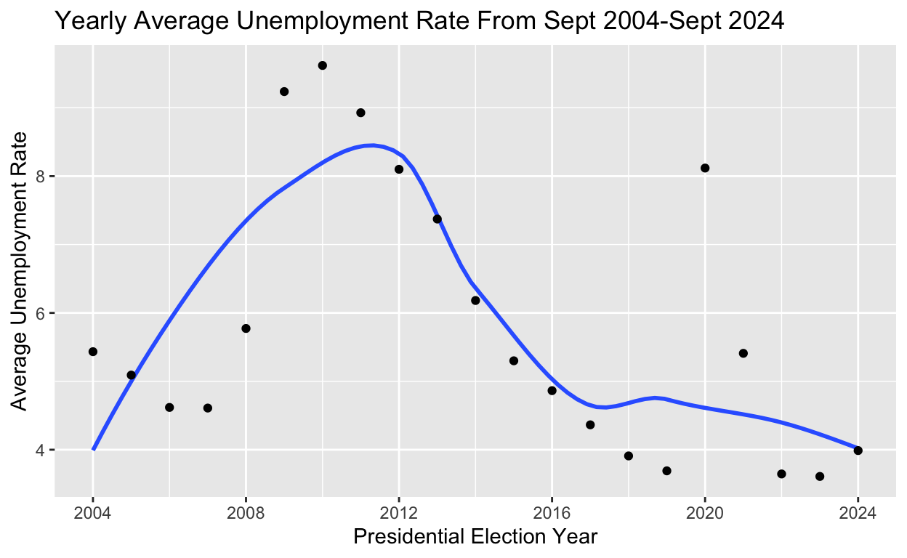
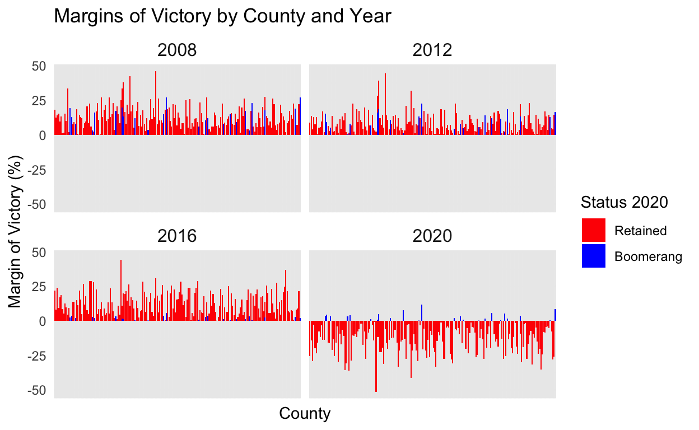

Examining the Effects of Unemployment Rates on Party Margins of Vicotry in the Last Four Presidental Elections Across the 206 “Pivot Counties”
Introduction
Much of the news cycle surrounding the 2024 presidential election revolved around the state of the economy and high inflation. Immediately after Donald Trump’s victory in November of 2024 (the first popularly elected republican president in 20 years), many reporters and political scientists are citing median voters’ concerns about inflation and the economy as a reason for his victory. It is a recognized trend among political scientists that American voters typically trust the republican party more than Democrats on issues regarding the economy. A joint ABC News and Ipsos national poll conducted in November 2023 reinforces this theory.
The Ipsos poll based on a nationally recognized probability sample of 949 adults aged 18 or older found that the Republican party was trusted more among Americans for handling issues on the economy, inflation, and crime, while Democrats held a trust advantage on issues dealing with gun violence, education, and healthcare. More specifically, 35% of Americans placed more trust in the republican party to deal with both inflation and general economic issues compared to only 21% of those polled favoring Democrats. This poll also revealed the economy as the number one voting issue for the majority of Americans.
Based on this observed preference for Republican handling of economic issues, I look to the past four presidential election cycles to determine if poor economic performance reduces Democratic margins of victory or disproportionately harms democratic candidates, specifically using polling data from the 206 “Pivot Counties”. Pivot counties are counties that as defined by Ballotpedia voted for Barack Obama in both the 2008 and 2012 presidential elections and then for Donald Trump in 2016. I want to pay special attention to pivot county results in 2020, as 181 of these counties were “Retained” or again had a majority vote for Trump while 25 of these counties became “Boomerang” counties, voting for Joe Biden.
My research question is: Using voting records from the 206 “Pivot Counties”, do high rates of unemployment leading up to a presidential election disproportionately harm the Republican or democratic party?
I hypothesize that the economic indicator of high unemployment rates will disproportionately result in greater margins of republican victory, the higher the unemployment rate, the larger the Republican margin of victory will be. My hypothesis is based on the polling that has shown Americans trust Republicans more than Democrats on the handling of the economy (regardless of actual economic growth under a Republican or Democratic president). I think many voters particularly in these pivot counties who vote less reliably on party lines are influenced heavily by their perceptions of economic strength. Unemployment is one of the simplest and most telling economic indicators. Both of my variables are quantitative so I won’t have to measure them on a sliding scale or by grouping factors, just margins of republican or democratic victory by election year in each of these pivot counties compared to national unemployment rates.
The observed pattern in this data will support my hypothesis if in years with higher unemployment rates pivot counties across the United States swing Republican by greater margins. If pivot counties vary drastically in margins of Republican victory regardless of unemployment rates this would disprove my hypothesis, if Democrats perform better in election years with high unemployment rates this will also disprove my hypothesis. This is an interesting question because if an observable and statistically significant pattern is found, this could influence future Democratic or republican campaign strategies as well as add to the historical context of election behavior shedding light on the 2024 presidential election results.
Data Section
In my analysis, I draw data from two separate sources. My unemployment data is sourced from the United States Bureau of Labor Statistics compiling national unemployment statistics from September 2004 - September 2024. I have sourced all Pivot county data from Ballotpedia for which Ballotpedia used raw data from the “Dave Leip of Atlas of U.S. Presidential Elections”
In this study, the yearly average unemployment rates are the independent variable, and Democratic and Republican margins of victories in pivot counties are the dependent variable. The independent variable (average unemployment rate) is measured by a percentage of national unemployment, and the dependent variable for each election year is measured by each pivot county’s Margins of Victory for Obama in 2008, and 2012, Trump in 2016, and a negative value in 2020 for Biden’s MOV in retained counties, and a positive MOV for counties Biden won in 2020 (Boomerang). Both the independent and dependent variables are measured in this study by national polling and unemployment survey data.
This study is cross-sectional times series investigation. Though the unemployment and election data is collected over 20 years, this study examines the relationship between levels of unemployment and Margins of Victory in pivot counties each election year. I pay specific attention to analyzing the relationship between unemployment rates and status as a boomerang or retained county in 2020. This investigation cannot be differences in differences designs because there are no specific treatment and control groups.
library(tidyverse)
library(broom)
library(lubridate)
library(ggplot2)
library(dplyr)
nat_unemployment <- read_csv("National Unemployment Statistics sep 2004 - sept 2024 - Sheet1.csv")
nat_unemployment <- nat_unemployment|>
select(Month, Total)
nat_unemployment <- nat_unemployment |>
mutate(Month = as.numeric(format(as.Date(paste0("01", Month), format = "%d %b %Y"), "%Y%m")))
nat_unemployment# A tibble: 241 × 2
Month Total
<dbl> <dbl>
1 NA 5.4
2 200410 5.5
3 200411 5.4
4 200412 5.4
5 200501 5.3
6 200502 5.4
7 200503 5.2
8 200504 5.2
9 200505 5.1
10 200506 5
# ℹ 231 more rowsannual_avg_unemployment <- nat_unemployment |>
filter(!is.na(Month)) |>
mutate(Year = floor(Month/100)) |>
group_by(Year) |>
summarize(annual_avg_unemployment = mean(Total, na.rm = T))
annual_avg_unemployment# A tibble: 21 × 2
Year annual_avg_unemployment
<dbl> <dbl>
1 2004 5.43
2 2005 5.09
3 2006 4.62
4 2007 4.61
5 2008 5.77
6 2009 9.24
7 2010 9.62
8 2011 8.93
9 2012 8.1
10 2013 7.37
# ℹ 11 more rowselection_unemployment <-
ggplot(data = annual_avg_unemployment,
mapping = aes(x = Year, y = annual_avg_unemployment)) + geom_smooth(se = FALSE) +
geom_point() +
scale_x_continuous(breaks = c(2004, 2008, 2012, 2016, 2020, 2024)) +
labs(
title = "Yearly Average Unemployment Rate From Sept 2004-Sept 2024",
x = "Presidential Election Year",
y = "Average Unemployment Rate",
caption = "U.S. Bureau of Labor Statistics 2024" +
theme_minimal(base_size = 14))
election_unemployment
Yearly Average Unemployment Rates from Sept 2004 - Sept 2024
This visualization of unemployment rates shows rising unemployment rates from 2008 to 2012, peaking in 2012. In 2016 unemployment rates had returned to nearly their levels in 2006. The COVID-19 pandemic in 2020 resulted in a skyrocket in unemployment rates, though as the graph shows these remained lower than the highest yearly averages of unemployment in 2009, 2010, and 2011. By 2022, unemployment had returned to low levels. Based only on unemployment data and knowledge about presidential victories in these election years, this does not seem to show a substantive relationship between high unemployment rates and Republican victory. Most notably President Barack Obama won reelection in 2012 following his first term which oversaw dramatic increases in unemployment, additionally, in 2016 when unemployment rates had dropped to 2005 levels, democrats did not win the white house. However, this graph alone is not enough to support or reject the hypothesis but it is an interesting visualization and observation that there is not an immediate correlation between high rates of unemployment and Republican victory.
Results Section
library(ggplot2)
library(tidyr)
county_results <- read_csv("county_resultes - Sheet1.csv")
county_results <- county_results |>
mutate(`MOV 2020` = case_when(
`Status 2020` == "Boomerang" ~ `MOV 2020`,
`Status 2020` == "Retained" ~ - `MOV 2020`,
TRUE ~ `MOV 2020`))
county_results# A tibble: 206 × 7
County State `Status 2020` `MOV 2020` `Trump MOV 2016`
<chr> <chr> <chr> <dbl> <dbl>
1 Woodruff County Arkans… Retained -27.8 8.91
2 Conejos County Colora… Retained -7.55 3.56
3 Huerfano County Colora… Retained -2.88 6.61
4 Las Animas County Colora… Retained -9.89 15.6
5 Pueblo County Colora… Boomerang 1.72 0.5
6 Windham County Connec… Retained -4.27 7.78
7 Kent County Delawa… Boomerang 4.07 4.87
8 Jefferson County Florida Retained -6.87 5.06
9 Monroe County Florida Retained -7.92 6.82
10 Pinellas County Florida Boomerang 0.22 1.11
# ℹ 196 more rows
# ℹ 2 more variables: `Obama MOV 2012` <dbl>, `Obama MOV 2008` <dbl>county_results_long <- county_results |>
pivot_longer(
cols = c("Trump MOV 2016", "Obama MOV 2012", "Obama MOV 2008", "MOV 2020"),
names_to = "Year",
values_to = "MOV"
) |>
mutate(
Year = as.character(Year),
Year = case_when(
Year == "MOV 2020" ~ 2020,
Year == "Trump MOV 2016" ~ 2016,
Year == "Obama MOV 2012" ~ 2012,
Year == "Obama MOV 2008" ~ 2008
),
"Status 2020" = factor(`Status 2020`, levels = c("Retained", "Boomerang")))
# creating a facet graph for each election
facet_plot <- ggplot(data = county_results_long,
aes(x = County, y = MOV, fill = `Status 2020`)) +
geom_col() +
facet_wrap(~ Year) +
scale_fill_manual(values = c("Retained" = "red", "Boomerang" = "blue")) +
labs(
title = "Margins of Victory by County and Year",
x = "County",
y = "Margin of Victory (%)",
fill = "Status 2020"
) +
theme_minimal() +
theme(
axis.text.x = element_blank(),
strip.text = element_text(size = 12))
facet_plot
county_results_long$Year <- as.numeric(county_results_long$Year)
annual_avg_unemployment$Year <- as.numeric(annual_avg_unemployment$Year)
combined_data <- left_join(county_results_long, annual_avg_unemployment, by = "Year")
combined_data# A tibble: 824 × 6
County State `Status 2020` Year MOV annual_avg_unemploym…¹
<chr> <chr> <fct> <dbl> <dbl> <dbl>
1 Woodruff C… Arka… Retained 2016 8.91 4.86
2 Woodruff C… Arka… Retained 2012 4.21 8.1
3 Woodruff C… Arka… Retained 2008 7.46 5.77
4 Woodruff C… Arka… Retained 2020 -27.8 8.12
5 Conejos Co… Colo… Retained 2016 3.56 4.86
6 Conejos Co… Colo… Retained 2012 9.22 8.1
7 Conejos Co… Colo… Retained 2008 12.9 5.77
8 Conejos Co… Colo… Retained 2020 -7.55 8.12
9 Huerfano C… Colo… Retained 2016 6.61 4.86
10 Huerfano C… Colo… Retained 2012 8.27 8.1
# ℹ 814 more rows
# ℹ abbreviated name: ¹annual_avg_unemploymentimpactmodel <- lm(MOV ~ annual_avg_unemployment * `Status 2020`, data = combined_data)
summary(impactmodel)
Call:
lm(formula = MOV ~ annual_avg_unemployment * `Status 2020`, data = combined_data)
Residuals:
Min 1Q Median 3Q Max
-48.421 -6.380 0.255 7.277 29.582
Coefficients:
Estimate Std. Error
(Intercept) 40.4710 1.8775
annual_avg_unemployment -5.3300 0.2735
`Status 2020`Boomerang -34.9630 5.3894
annual_avg_unemployment:`Status 2020`Boomerang 5.5868 0.7851
t value Pr(>|t|)
(Intercept) 21.556 < 2e-16 ***
annual_avg_unemployment -19.488 < 2e-16 ***
`Status 2020`Boomerang -6.487 1.51e-10 ***
annual_avg_unemployment:`Status 2020`Boomerang 7.116 2.42e-12 ***
---
Signif. codes: 0 '***' 0.001 '**' 0.01 '*' 0.05 '.' 0.1 ' ' 1
Residual standard error: 10.54 on 820 degrees of freedom
Multiple R-squared: 0.3195, Adjusted R-squared: 0.317
F-statistic: 128.3 on 3 and 820 DF, p-value: < 2.2e-16The first plot in my results section is a facet wrap of all 4 studied election years modeling the margin of victory in all 206 pivot counties for presidential victors. The blue counties are counties that in 2020 became boomerang counties voting for Biden. Despite higher rates of unemployment leading up to 2012, Obama sustained only slight decreases in general margins of victory across pivot counties in 2012. Interestingly in 2016, when the unemployment rate had dropped to an average of just below 5% President Trump experienced margins of victory comparable to Obama in 2008 and across nearly every county a higher margin of victory for Obama in 2012. These results in 2016 seem to go directly against my hypothesis that high rates of unemployment will favor republican victory as in 2012, and conversely that low rates of unemployment would favor Democratic candidates, rejected by Republican pivot county margin of victory in 2016. For retained counties in 2020, Trump achieved similar margins of victory to those in 2016 except for the 25 boomerang counties that changed their vote for President Biden, (it is worth noting that these counties had the smallest margins of victory for Trump in 2016).
Generally, this graph does not seem to support my hypothesis in any substantive way. Looking at the results of my linear regression which analyzed how the Margins of Victories in counties depend on annual unemployment rates and the county status, (boomerang, or retained) in 2020, additionally revealing the differences in the effect of unemployment on MOV between boomerang and retained counties.Diving into the specific results from the linear regression, we can ignore the estimated intercept which tells us when unemployment is 0, margins of victories for all candidates across 2008, 20012, 2016, and 2020 would be almost 40%, this can be disregarded for two reasons. One, unemployment will never reach zero and this number/measurement does not take into consideration the difference in party affiliation. The estimate of -5.33 indicates that in retained counties, across all 4 presidential election years, for every 1% increase in unemployment, the MOV decreases by 5.33 percentage points regardless of incumbency status or party affiliation. For boomerang counties, a 1% increase in unemployment across all four presidential election years yields a very different effect. For Boomerang counties, a 1% increase in unemployment has resulted in an average 5.59% increase in MOV. While the ~5% decrease in margins of victory for retained counties does align with the idea that poor economic health and higher rates of unemployment are bad for incumbents, (individuals or parties), the boomerang county results directly refute this. This high variability between retained and boomerang countries suggests that further research is needed into other factors that may influence voters in boomerang countries.The extremely low P values for all of these results show that there is a statistically significant difference in the relationships between unemployment rates and their impact on boomerang and retained counties.
Conclusion
In summary, the results of this investigation showed that there is not a clear relationship between rates of high unemployment and disproportionate harm to democratic candidates. As both the visualization of MOV across the 106 pivot counties and the rates of unemployment indicate, high rates of unemployment cannot be the predominant factor in indicating party or individual incumbent success. As discussed in the data and results section, if my hypothesis had been correct, the margin of victory graphs would have shown a democratic loss in 2012, a Democratic win in 2016, and a republican win in 2020 due to a large spike in unemployment in 2020. The linear regression reveals that there is a strongly supported relationship between unemployment rates and voter behavior and a stark contrast in the difference in impact of unemployment rates in MOV in boomerang and retained counties but otherwise does not in any way support my hypothesis. I would say by and large the results of my investigation reject my main hypothesis that Democrats will be disproportionately harmed in presidential election years with high rates of unemployment. Going forward I am now considering a better hypothesis that high rates of unemployment while in office harm the incumbent no matter the party affiliation. This would be particularly interesting to study given the unprecedented victory of Donald Trump in 2024.
An improvement to this study would be to have unemployment data from each pivot county individually rather than using a national yearly average against specific pivot county MOV election results. Another improvement to this study would be to bring in additional indicators of economic health like US GDP or consumer confidence levels. Due to these variable limitations, I believe that my P value relationship between the effect of unemployment rates on boomerang and retained counties is weak and does not produce the most helpful or insightful results into broad national trends of voter behavior regarding party affiliation and the economy. Additionally, there are a lot of economic factors that influence the unemployment rate and presidential approval. For example, Obama was elected in 2008 in part because he offered solutions to the 2008 economic recession and housing crisis which had resulted in higher unemployment rates. The unemployment data for 2020 is skewed as a result of Covid resulting in a huge spike in 2020 Trump oversaw this spike while in office and was superseded by Biden. Maybe a similarity can be drawn between a large spike in unemployment, in 2008, and 2020, and the country turning to a Democratic Candidate.
A final weakness of this investigation is the numerous possibilities of confounders. Election behavior and voter motivations continue to be one of the hardest topics to study in political science. There are so many variables that can affect a voter’s vote every day leading up to an election, including election day. Isolating one factor and attempting to infer its overall impact on the electorate and election results with high levels of statistical significance is incredibly difficult. Specific confounders in this study deal mostly with the pivot counties; this data did not examine differences in pivot counties such as geographic regions, states, and rural/urban divide which might drastically affect unemployment rates within these counties or interest in economic factors as the most salient political issue.
Resources
ABC News and Ipsos 2023. https://www.ipsos.com/en-us/one-year-election-day-republicans-perceived-better-handling-economy
Ballotpedia 2020. https://ballotpedia.org/Election_results,_2020:_Pivot_Counties_in_the_2020_presidential_election
Unites States Buerou of Labor Statistics 2024. https://www.bls.gov/cps/
Unpolished Extra graph and attempts at random sampling of Pivot Counties
set.seed(123)
Pivot_Sample <- county_results |>
sample_n(30)
county_results <- Pivot_Sample |>
gather(key = "Election_year", value = "MOV",
`Obama MOV 2008`, `Obama MOV 2012`, `Trump MOV 2016`, `MOV 2020`)
Pivot_Sample <- county_results |>
mutate(Candidate = case_when(
str_detect(Election_year, "Obama") ~ "Obama",
str_detect(Election_year, "Trump") ~ "Trump",
TRUE ~ "Biden"
))
ggplot(Pivot_Sample, aes(x = Election_year, y = County, fill = MOV)) +
geom_tile() +
scale_fill_gradient2(low = "white", high = "hotpink", mid = "pink", midpoint = 11, name = "Percent MOV ") +
labs(title = "30 Randomly Sampled Pivot Counties: MOV Heatmap by Candidate",
x = "Election Year", y = "County", caption = "Data Source: BALLOTPEDIA") +
facet_wrap(~ Candidate) +
theme_minimal()